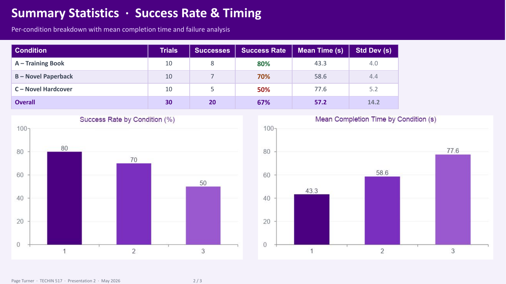
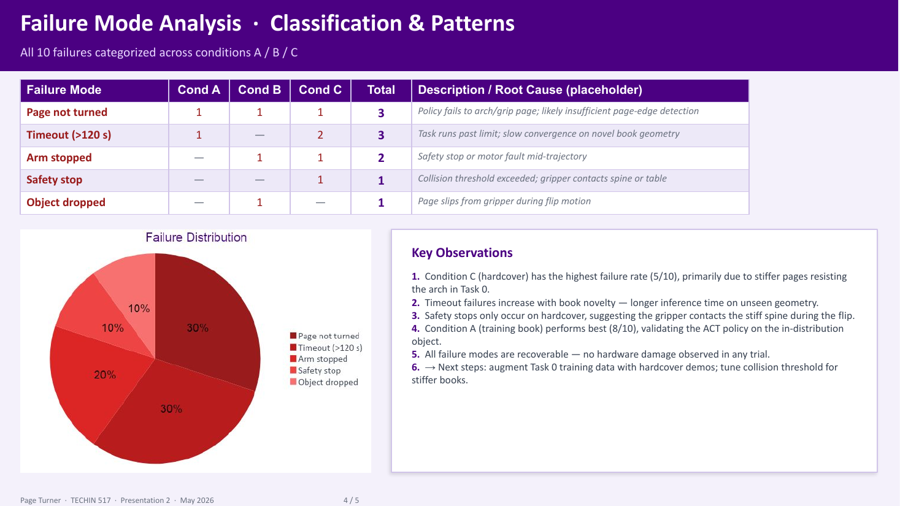
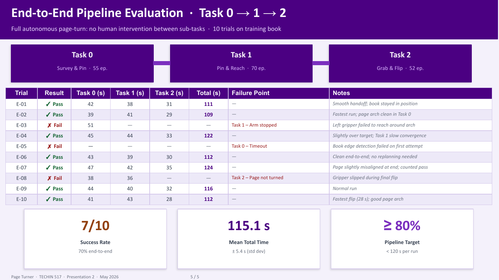

Task
Deformable pages and bimanual coordination
One arm stabilizes the book while the other forms a page arch, inserts, grasps and turns. Deformation, occlusion, contact, grasp stability and accumulated long-horizon errors make the task difficult.
An SO-100/101 bimanual page-turning project. Instead of reporting only a final success rate, the evaluation converts physical rollouts into telemetry, event labels, milestone funnels and actionable training improvements.
One arm stabilizes the book while the other forms a page arch, inserts, grasps and turns. Deformation, occlusion, contact, grasp stability and accumulated long-horizon errors make the task difficult.




The materials contain different experimental conditions and success definitions. This page focuses on the verifiable evaluation method and does not merge training-book, unseen-book, milestone and full-task success rates.